| ・ 10th ISEM '15-Matsue 初日 (H27.11.01) | |||
10th ISEM '15-Matsueがスタート．今回はM2のShogoとM1のTNくんは最終日発表，Y西くんが2日目発表．助教の人は2日目午前の座長です．全員が揃う日は3日目午後だけという変則パターン．Y西くんは前日入り．ロボ研の東先生とB4のA堀くん，助教の人は会期中全部参加です． |
|||
|
若冲は細見美術館で観たばっかり |
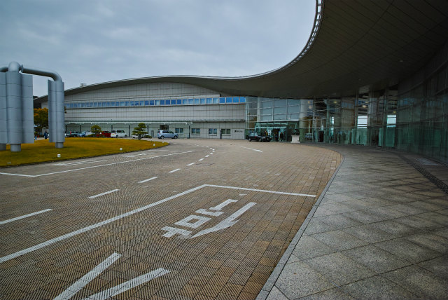
島根県立美術館（菊竹清訓，1999） | ||
|
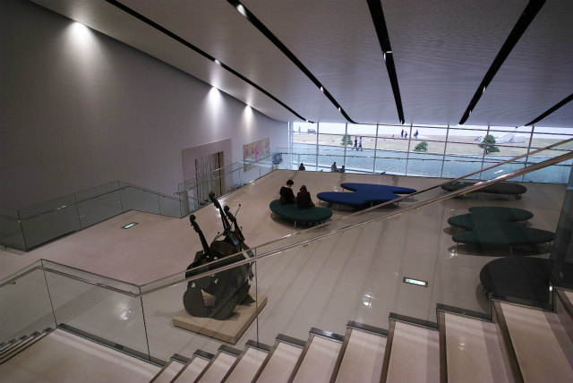
関空みたいな屋根 |
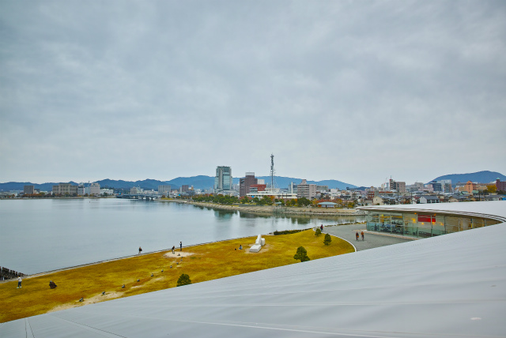
展望台から | ||
|
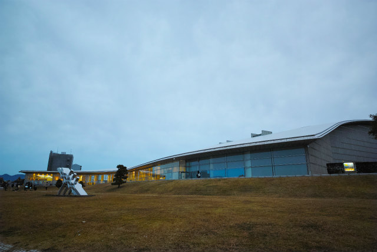
宍道湖の夕日が有名な美術館 |
日没17時14分，雲が多くてうっすら | ||
|
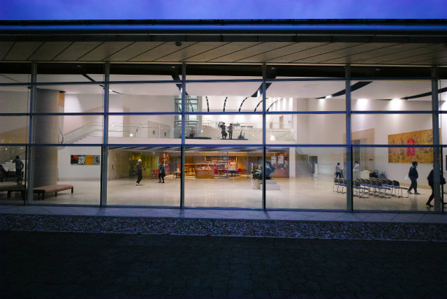
夜間も開館 |
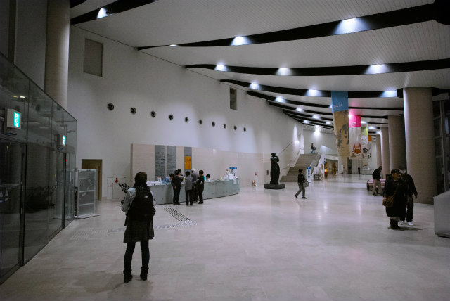
京信の支店はだいたい菊竹清訓です | ||
|
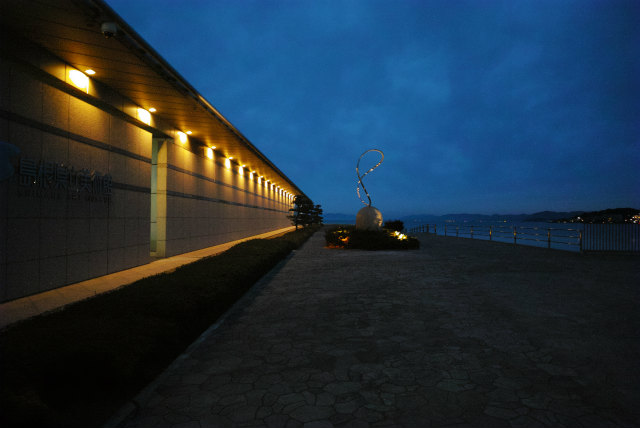
なぞオブジェ |
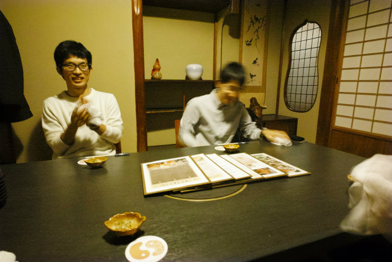
ロボ研の東先生，B4のA堀くんと晩飯 | ||
|
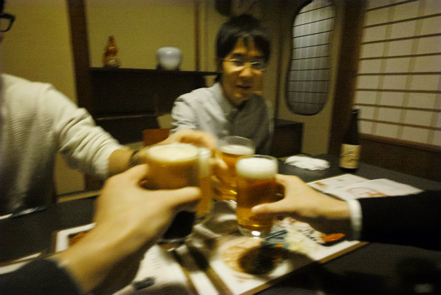
乾杯 |
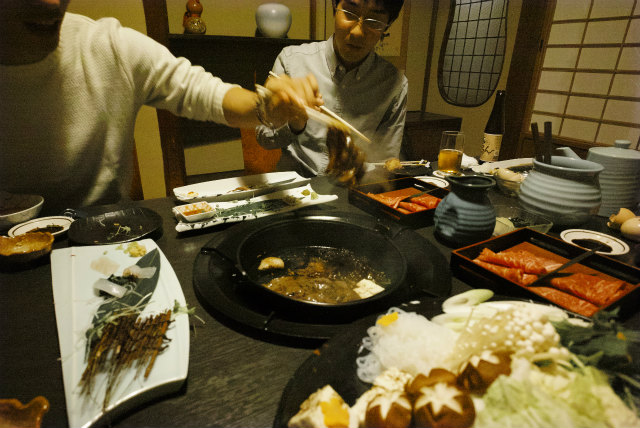
すき焼き | ||
|
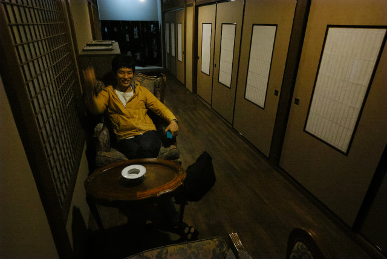
くつろぐY西くん |
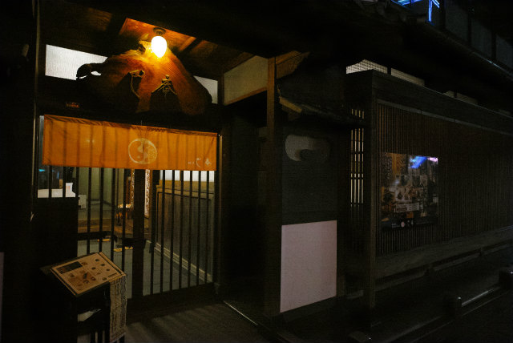
良い感じの建屋でした | ||
|
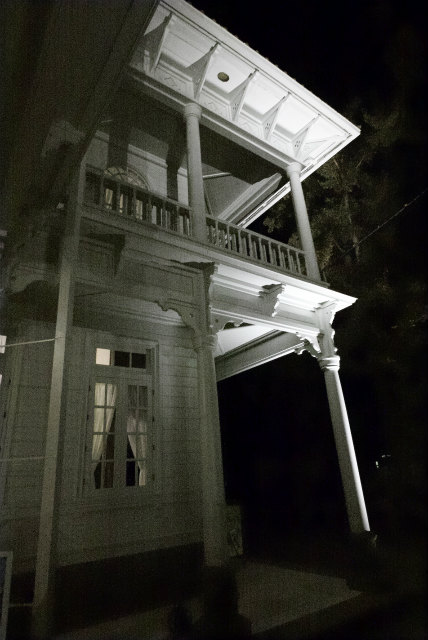
興雲閣（和泉利三郎，1903） |
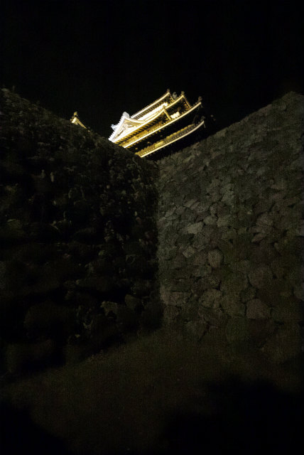
国宝 松江城 | ||